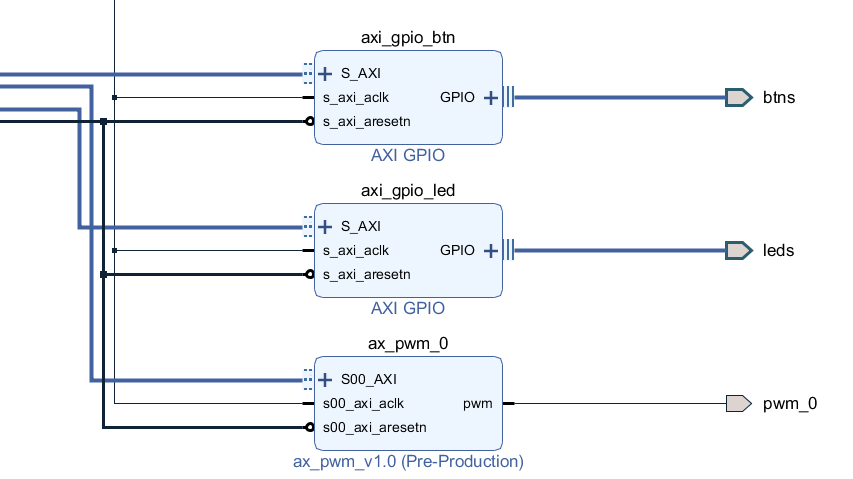
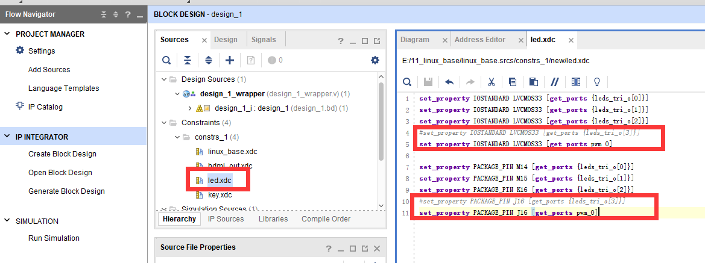
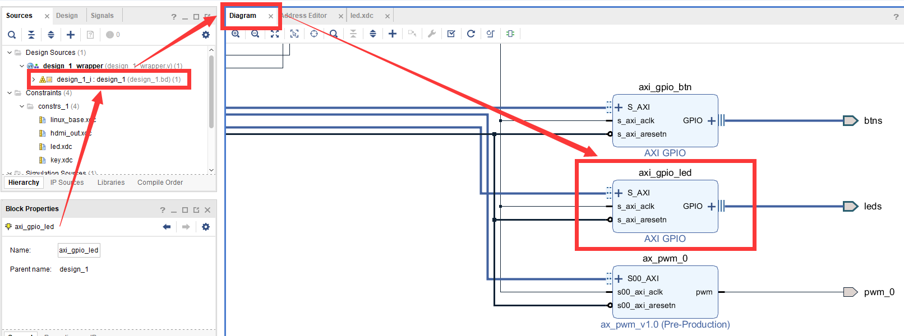
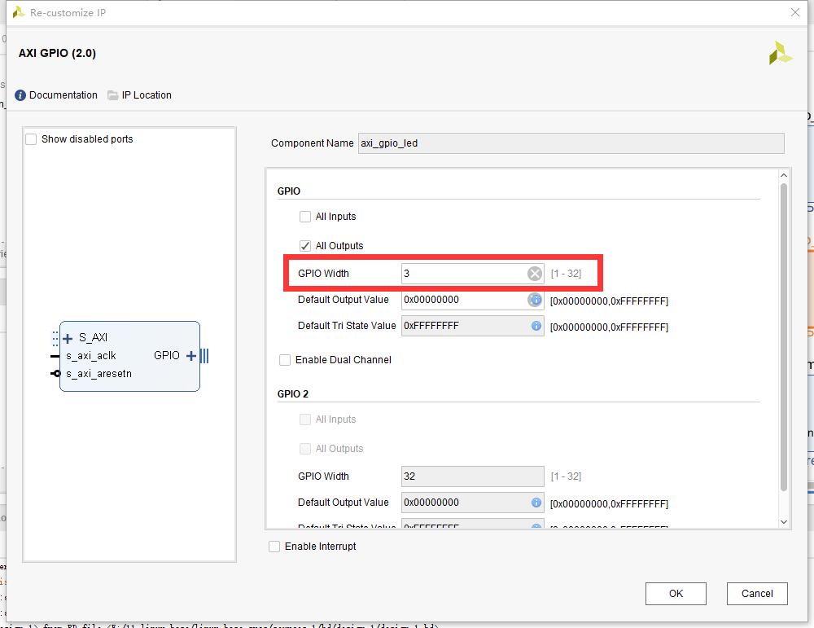
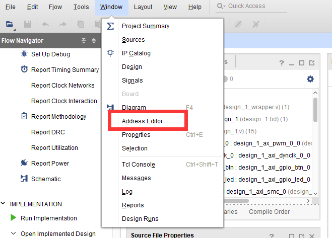
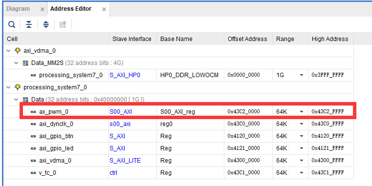
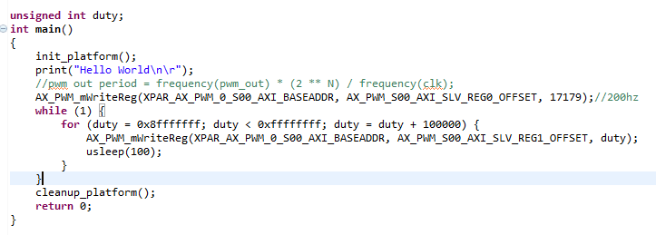
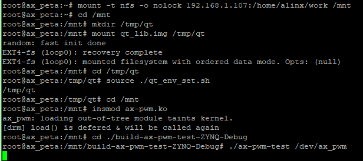

pwm驱动#
pwm在嵌入式设备中使用很多，常用于控制电机、控制振动器件、调节背光、呼吸灯等等。这一章就来学习zynq平台上Linux系统中的pwm驱动的实现方法。
zynq上的pwm实现#
修改vivado工程#
zynq平台上输出pwm需要借助pl端(fpga)的资源。
整个过程这里就不详细说了，添加pwm的ip之后结果如下：
ip添加完成后，需要修改xdc更改引脚约束，这里我们准备使用pwm来控制开发板上PL_LED4这个led。打开led.xdc文件，原先的J16脚是配置成led的，现在修改成pwm_0，如下图。
这里修改完后，原先gpio输出的ip就少了一个引脚的使用，我们对应修改一下ip，双击axi_gpio_led这个ip，打开配置界面，如下图：
 把GPIO Width字段修改成3。这样就修改完成了，再导出硬件信息并重新定制一个petalinux系统。
控制pwm输出的方法#
控制pwm输出有两个关键参数，一是频率，二是占空比。在上面我们配置好硬件信后，该如何去操作pwm的这两个参数呢。自定义IP可以理解为配置fpga的寄存器资源变成我们想要的设备，添加IP后，我们就可以像操作ARM资源一样，通过操作紧寄存器来操fpga的资源。那首先我们就要找到pwm设备的寄存器首地址。在菜单栏Window选项中打开Address Editor窗口。如图下：
 就能找到ip对应的寄存器范围，这个寄存器首地址是vivado工程自动分配的，所以每个人的可能会不一样，当然也可以手动修改。
光是找到了寄存器首地址，还是不知道寄存器的具体设置方法，这里我们参考一下S2文档Vitis软件编写调试试验。
实验工程中的主函数如下图：
AX_PWM_mWriteReg函数用于设置寄存器的值，第一个参数是首地址，第二个参数是偏移量，第三个参数是目标值。
第一次调用AX_PWM_mWriteReg函数是设置频率。XPAR_AX_PWM_0_S00_AXI_BASEADDR的值就是我们上面在Address Editor界面中查到的首地址，看一下偏移量AX_PWM_S00_AXI_SLV_REG0_OFFSET的值为0。也就是说设置频率的寄存器就是首地址了。
第二次调用是设置占空比，首地址没变，偏移量AX_PWM_S00_AXI_SLV_REG1_OFFSET的值为4，也就是首地址加4。
Linux中的pwm框架#
在Linux内核提供了一套完整的pwm框架。但是在zynq上使用这套框架需要注意，zynq上的pwm是借助fpga资源来实现的，自定义ip的寄存器设置可能会因人而异，因此要使用这套框架，需要保证自定义ip的一致。再者如果只是简单的pwm应用，如本章实验的led呼吸灯，使用这个框架就显得有些大材小用了。虽然在本章的实验中不会这个框架，但我们还是简单的介绍一下，了解一下其中的结构与设计思路。
pwm框架还是融入了驱动的分层思想，把pwm驱动分成了pwm_device(设备)和pwm_chip(芯片)两个部分，pwm_chip意为pwm的芯片，它可以输出单路或者多路pwm波形，而pwm_device即为使用pwm_chip其中一路或多路的设备，以本章例程led呼吸灯为例，led就是pwm_device，我们自定义的pwmip就是pwm_chip。pwm的框架一般会和platform框架结合使用。接下来我们分别介绍他们的实现方法。
pwm_device#
一个使用pwm的设备，需要关注四个参数：使能、极性、频率、占空比，对此pwm框架提供了以下方法来与之对应：
int pwm_enable(struct pwm_device *pwm);和void pwm_disable(struct pwm_device *pwm);
pwm_enable函数用使能pwm输出，pwm_disable用于失能pwm输出。
int pwm_set_polarity(struct pwm_device *pwm, enum pwm_polarity polarity);
pwm_set_polarity用于设置极性，可选参数有PWM_POLARITY_NORMAL(普通)和PWM_POLARITY_INVERSED(反转)两种。
int pwm_config(struct pwm_device *pwm, int duty_ns, int period_ns);
pwm_config函数用于设置占空比和频率，参数duty_ns为占空比，period_ns为频率。
这些接口函数定义在文件include/linux/pwm.h中，他们都需要一个struct pwm_device类型的指针作为操作句柄。
pwm_device结构体则是指代使用pwm的设备，我们要使用这些接口，需要先获取一个pwm_device结构体。
获取pwm_device结构体的方法也定义在文件include/linux/pwm.h中。如下：
struct pwm_device *pwm_get(struct device *dev, const char*con_id); struct pwm_device *of_pwm_get(struct device_node *np, const char*con_id);
这两个方法将从指定设备(参数dev)的设备树节点或者直接从设备树节点(参数np)中去获取pwm_device。对设备树的格式要求如下：
bl: backlight { pwms = <&pwm 0 5000000 PWM_POLARITY_INVERTED>; pwm-names = “backlight”; } |
bl: backlight即为设备节点名称。节点中的两个属性都是必须的 pwms指代这个设备用到的pwm列表，第一个参数&pwm实际是引用了pwm_chip节点，具体在讲pwm_chip的时候再说。第二个参数指代platform_device的设备号，具体根据实际情况来定，不一定会用到。第三个参数500000是pwm的默认周期，单位是纳秒。第四个参数是可选字段，表示极性。 pwm-names是与pwms相对应的pwm设备名称。”backlight”就是与&pwm 0 5000000 PWM_POLARITY_INVERTED相对应。 函数参数con_id用于指定相匹配的pwm设备，如果NULL，就会返回pwms中的第一个设备，如果指定名称如”backlight”，就会返回对应的设备。
void pwm_put(struct pwm_device *pwm);
与获取get函数相对的put，用于释放pwm_device。pwm_device需要关注的事情就这些，pwm设备调用了接口函数后，最终就会调用pwm_chip中的操作函数，接下来我们再看pwm_chip。
pwm_chip#
pwm_chip关在作用在于，它提供了pwm_device接口函数对应的操作函数集，pwm_chip结构体定义在include/linux/pwm.h中，如下：
struct pwm_chip { struct device *dev; struct list_head list; const struct pwm_ops *ops; int base; unsigned int npwm; struct pwm_device *pwms; struct pwm_device * (*of_xlate)(struct pwm_chip *pc, const struct of_phandle_args *args); unsigned int of_pwm_n_cells; bool can_sleep; }; |
dev为pwm chip对应的设备，一般由pwm driver对应的platform驱动指定且必须提供。
ops为pwm_device中接口函数对应的操作函数集，必须提供。
npwm为pwm chip可以支持的pwm_device个数，必须提供。
pwms为该pwm chip中pwm device的数组，kernel会自行分配，不需要手动设置。
重点介绍一下struct pwm_ops结构体指正ops。struct pwm_ops定义如下：
struct pwm_ops { int (*request)(struct pwm_chip *chip, struct pwm_device *pwm); void (*free)(struct pwm_chip *chip, struct pwm_device *pwm); int (*config)(struct pwm_chip *chip, struct pwm_device *pwm, int duty_ns, int period_ns); int (*set_polarity)(struct pwm_chip *chip, struct pwm_device *pwm, enum pwm_polarity polarity); int (*enable)(struct pwm_chip *chip, struct pwm_device *pwm); void (*disable)(struct pwm_chip *chip, struct pwm_device *pwm); #ifdef CONFIG_DEBUG_FS void (*dbg_show)(struct pwm_chip *chip, struct seq_file *s); #endif struct module *owner; }; |
request和free函数已经弃用了。
函数与pwm_device接口函数中的pwm_config函数相对应，配置pwm_device的频率、占空比。必须提供。
enable、disable函数与pwm_device接口函数中的pwm_enable、pwm_disable函数相对应，用于使能/禁止pwm信号输出。必须提供。
set_polarity函数与pwm_device接口函数中的pwm_set_polarity函数对应，设置pwm信号的极性。可选。
定义一个pwm_chip之后，需要实现ops中至少config、enable、disable三个函数。初始化完成后，使用下面的函数向内核注册pwm_chip：
int pwmchip_add(struct pwm_chip *chip); |
相对的注销使用函数：
int pwmchip_remove(struct pwm_chip *chip); |
在实现config等函数时，需要通过设备树获取设备信息，pwm_chip在设备树中的节点格式并不固定，添加相关信息即可。如下:
pwm: pwm@43C20000 { compatible = “test-pwm”; reg = <0x43C20000 0x100>; }; |
上面再pwm_device的节点中有对pwm_chip的引用”pwms = <&pwm 0 5000000 PWM_POLARITY_INVERTED>;”。这里的&pwm，实际上就是引用如”pwm: pwm@43C20000”这样的pwm_chip0节点。引用的目的也就是把device和chip相关联。
专用的pwm芯片厂家会提供pwm_chip的驱动，但是xlinx斌没有提供，也许是考虑到自定义ip的多样性，因此在zynq平台上使用pwm框架，还需要驱动开发人员去实现pwm_chip，比较麻烦。
示例#
设备树：
pwm: pwm@43C20000 {
compatible = "alinx-pwm";
reg = <0x43C20000 1>;
#pwm-cells = <2>;
};
pwm-led {
compatible = "pwm-led";
pwms = <&pwm 0 5000000>;
};
pwm_chip： 结合platform框架，从设备树中获取信息，注册pwm_chip。
struct ax_pwm_chip {
struct pwm_chip chip;
};
struct ax_pwm_chip ax_pwm;
static int ax_pwm_config(struct pwm_chip *chip, struct pwm_device *pwm, int duty_ns, int period_ns)
{
return 0;
}
static int ax_pwm_enable(struct pwm_chip *chip, struct pwm_device *pwm)
{
return 0;
}
static void ax_pwm_disable(struct pwm_chip *chip, struct pwm_device *pwm)
{
}
static const struct pwm_ops ax_pwm_ops = {
.owner = THIS_MODULE,
.config = ax_pwm_config,
.enable = ax_pwm_enable,
.disable = ax_pwm_disable,
};
static int ax_pwm_probe(struct platform_device *pdev)
{
int err;
ax_pwm.chip.dev = &pdev->dev;
ax_pwm.chip.ops = &ax_pwm_ops;
ax_pwm.chip.npwm = 1;
err = pwmchip_add(&ax_pwm.chip);
if (err < 0)
{
return err;
}
return 0;
}
static int ax_pwm_remove(struct platform_device *pdev)
{
int err;
err = pwmchip_remove(&ax_pwm.chip);
if (err < 0)
{
return err;
}
return 0;
}
static const struct of_device_id of_ax_pwm_match[] = {
{ .compatible = "alinx-pwm", },
{ /* Sentinel */ },
};
static struct platform_driver ax_pwm_driver = {
.driver = {
.name = "alinx-pwm",
.of_match_table = of_ax_pwm_match,
},
.probe = ax_pwm_probe,
.remove = ax_pwm_remove,
};
module_platform_driver(ax_pwm_driver);
pwm_device：
结合misc设备框架，注册pwm_device。
#define PWM_ON 0x100001
#define PWM_OFF 0x100002
struct pwm_device *ax_pwm_dev;
static long ax_pwm_ioctl(struct file *file, unsigned int cmd, unsigned long arg)
{
int ret;
switch(cmd) {
case PWM_ON:
ret = pwm_config(ax_pwm_dev, 200000, 500000);
pwm_enable(ax_pwm_dev);
break;
case PWM_OFF:
ret = pwm_config(ax_pwm_dev, 0, 500000);
pwm_disable(ax_pwm_dev);
break;
}
return 0;
}
static struct file_operations ax_pwm_fops = {
.owner = THIS_MODULE,
.unlocked_ioctl = ax_pwm_ioctl,
};
static struct miscdevice pwm_misc = {
.minor = MISC_DYNAMIC_MINOR,
.name = "ax-pwm",
.fops = &ax_pwm_fops
};
static int ax_pwm_init(void)
{
int ret;
struct device_node *nd;
nd = of_find_node_by_path("/pwm-led");
ax_pwm_dev = of_pwm_get(nd, "pwm-led");
misc_register(&pwm_misc);
return 0;
}
static void ax_pwm_exit(void)
{
pwm_put(ax_pwm_dev);
}
module_init(ax_pwm_init);
module_exit(ax_pwm_exit);
实验#
本章实验结合platform和misc框架，实现简单的led呼吸灯。
原理图#
和 字符设备 章节的原理图相同。
设备树#
打开system-user.dtsi文件，在根节点中添加下面的节点：
alinxpwm {
compatible = "alinx-pwm";
reg-freq = <0x43C20000 1>;
reg-duty = <0x43C20004 1>;
};
compatible节点兼容性为”alinx-pwm”，之后的驱动代码中platform的of匹配表需要和这个属性一致。
reg-freq和reg-duty分别的频率和占空比的物理地址，从vivado中获得。
驱动程序#
使用 petalinux新建名为”ax-pwm”的驱劢程序，并执行 petalinux-config -c rootfs 命令选上新增的驱动程序。
在 ax-pwm.c 文件中输入下面的代码：
#include <linux/types.h>
#include <linux/kernel.h>
#include <linux/delay.h>
#include <linux/init.h>
#include <linux/module.h>
#include <linux/errno.h>
#include <linux/of.h>
#include <linux/cdev.h>
#include <linux/device.h>
#include <linux/semaphore.h>
#include <linux/timer.h>
#include <linux/irq.h>
#include <linux/wait.h>
#include <linux/poll.h>
#include <linux/fs.h>
#include <linux/fcntl.h>
#include <linux/platform_device.h>
#include <linux/miscdevice.h>
#include <asm/mach/map.h>
#include <asm/uaccess.h>
/* 设备节点名称 */
#define DEVICE_NAME "ax_pwm"
/* 设备号个数 */
#define DEVID_COUNT 1
/* 驱动个数 */
#define DRIVE_COUNT 1
/* 主设备号 */
#define MAJOR_AX
/* 次设备号 */
#define MINOR_AX
/* 设置频率 */
#define PWM_FREQ 0x100001
/* 设置占空比 */
#define PWM_DUTY 0x100002
/* 把驱动代码中会用到的数据打包进设备结构体 */
struct alinx_char_dev{
dev_t devid; //设备号
struct cdev cdev; //字符设备
struct device_node *nd; //设备树的设备节点
unsigned int *freq; //频率的寄存器虚拟地址
unsigned int *duty; //占空比的寄存器虚拟地址
};
/* 声明设备结构体 */
static struct alinx_char_dev alinx_char = {
.cdev = {
.owner = THIS_MODULE,
},
};
/* open函数实现, 对应到Linux系统调用函数的open函数 */
static int ax_pwm_open(struct inode *inode_p, struct file *file_p)
{
/* 设置私有数据 */
file_p->private_data = &alinx_char;
return 0;
}
/* iotcl函数实现, 对应到Linux系统调用函数的iotcl函数 */
static long ax_pwm_ioctl(struct file *file_p, unsigned int cmd, unsigned long arg)
{
/* 获取私有数据 */
struct alinx_char_dev *dev = file_p->private_data;
switch(cmd)
{
case PWM_FREQ:
{
*(dev->freq) = (unsigned int)arg;
break;
}
case PWM_DUTY:
{
*(dev->duty) = (unsigned int)arg;
break;
}
default :
{
break;
}
}
return 0;
}
/* release函数实现, 对应到Linux系统调用函数的close函数 */
static int ax_pwm_release(struct inode *inode_p, struct file *file_p)
{
return 0;
}
/* file_operations结构体声明 */
static struct file_operations ax_char_fops = {
.owner = THIS_MODULE,
.open = ax_pwm_open,
.unlocked_ioctl = ax_pwm_ioctl,
.release = ax_pwm_release,
};
/* MISC设备结构体 */
static struct miscdevice led_miscdev = {
/* 自动分配次设备号 */
.minor = MISC_DYNAMIC_MINOR,
.name = DEVICE_NAME,
/* file_operations结构体 */
.fops = &ax_char_fops,
};
/* probe函数实现, 驱动和设备匹配时会被调用 */
static int ax_pwm_probe(struct platform_device *dev)
{
/* 用于接受返回值 */
u32 ret = 0;
/* 频率的寄存器物理地址 */
int freq_addr;
/* 占空比的寄存器物理地址 */
int duty_addr;
/* 获取设备节点 */
alinx_char.nd = of_find_node_by_path("/alinxpwm");
if(alinx_char.nd == NULL)
{
printk("gpioled node nost find\r\n");
return -EINVAL;
}
/* 获取寄存器中freq的地址 */
of_property_read_u32(alinx_char.nd, "reg-freq", &freq_addr);
if(!freq_addr) {
printk("can not get reg-freq\r\n");
return -EINVAL;
}
else
{
/* 映射地址 */
alinx_char.freq = ioremap(freq_addr, 4);
}
/* 获取寄存器中duty的地址 */
of_property_read_u32(alinx_char.nd, "reg-duty", &duty_addr);
if(!duty_addr) {
printk("can not get reg-duty\r\n");
iounmap((unsigned int *)alinx_char.freq);
return -EINVAL;
}
else
{
/* 映射地址 */
alinx_char.duty = ioremap(duty_addr, 4);
}
/* 注册misc设备 */
ret = misc_register(&led_miscdev);
if(ret < 0) {
printk("misc device register failed\r\n");
return -EFAULT;
}
return 0;
}
static int ax_pwm_remove(struct platform_device *dev)
{
/* 释放虚拟地址 */
iounmap((unsigned int *)alinx_char.freq);
iounmap((unsigned int *)alinx_char.duty);
/* 注销misc设备 */
misc_deregister(&led_miscdev);
return 0;
}
/* 初始化of_match_table */
static const struct of_device_id pwm_of_match[] = {
/* compatible字段和设备树中保持一致 */
{ .compatible = "alinx-pwm" },
{/* Sentinel */}
};
/* 声明并初始化platform驱动 */
static struct platform_driver pwm_driver = {
.driver = {
/* name字段需要保留 */
.name = "alinx-pwm",
/* 用of_match_table代替name匹配 */
.of_match_table = pwm_of_match,
},
.probe = ax_pwm_probe,
.remove = ax_pwm_remove,
};
/* 驱动入口函数 */
static int __init pwm_drv_init(void)
{
/* 在入口函数中调用platform_driver_register, 注册platform驱动 */
return platform_driver_register(&pwm_driver);
}
/* 驱动出口函数 */
static void __exit pwm_drv_exit(void)
{
/* 在出口函数中调用platform_driver_register, 卸载platform驱动 */
platform_driver_unregister(&pwm_driver);
}
/* 标记加载、卸载函数 */
module_init(pwm_drv_init);
module_exit(pwm_drv_exit);
/* 驱动描述信息 */
MODULE_AUTHOR("Alinx");
MODULE_ALIAS("pwm_led");
MODULE_DESCRIPTION("PWM LED driver");
MODULE_VERSION("v1.0");
MODULE_LICENSE("GPL");
paltform和misc框架的部分可以参考 misc设备驱动 章节，几乎没变。
pwm的处理也很简单，从设备树中获取地址，然后再操作函数中操作地址。
33~36行定义了两个宏，用于ioctl的cmd，分别表示设置频率和设置占空比。
43行的freq用于从设备树中获取设置频率寄存器的地址。
44行的freq用于从设备树中获取设置占空比寄存器的地址。
测试程序#
新建 QT 工程名为”ax-pwm-test”，新建 main.c，输入下面的代码：
#include "stdio.h"
#include "unistd.h"
#include "sys/types.h"
#include "sys/stat.h"
#include "fcntl.h"
#include "stdlib.h"
#include "string.h"
#include "sys/ioctl.h"
#define FREQ_DEFAULT 1717900
/* 设置频率 */
#define PWM_FREQ 0x100001
/* 设置占空比 */
#define PWM_DUTY 0x100002
int main(int argc, char *argv[])
{
int fd, retvalue, flag = 0;
char *filename;
unsigned int duty = 0x0fffffff;
if(argc != 2)
{
printf("Error Usage\r\n");
return -1;
}
filename = argv[1];
fd = open(filename, O_RDWR);
if(fd < 0)
{
printf("file %s open failed\r\n", argv[1]);
return -1;
}
/* 设置频率 */
retvalue = ioctl(fd, PWM_FREQ, FREQ_DEFAULT);
if(retvalue < 0)
{
printf("pwm Failed\r\n");
close(fd);
return -1;
}
while(1)
{
if(duty <= 0xefffffff && 0 == flag)
{
duty += 2000000;
}
else if(duty >= 0x0fffffff)
{
duty -= 500000;
flag = 1;
}
else
{
flag = 0;
}
/* 设置占空比 */
retvalue = ioctl(fd, PWM_DUTY, duty);
if(retvalue < 0)
{
printf("pwm Failed\r\n");
close(fd);
return -1;
}
usleep(5);
}
return 0;
}
运行测试#
测试方法步骤如下：
mount -t nfs -o nolock 192.168.1.107:/home/alinx/work /mnt cd /mnt mkdir /tmp/qt mount qt_lib.img /tmp/qt cd /tmp/qt source ./qt_env_set.sh cd /mnt insmod ax-pwm.ko cd ./build-ax-pwm-test-ZYNQ-Debug ./ax-pwm-test /dev/ax_pwm |
IP 和路径根据实际情况调整。
串口工具中的调试结果如下：
开发板上的PL_LED4开始呼吸灯式的和闪烁。